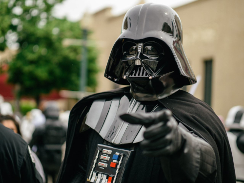

Darth Vader é um dos personagens mais icônicos da ficção científica e um dos principais antagonistas da saga Star Wars. Antes de se tornar um Lorde Sith, era conhecido como Anakin Skywalker, um talentoso Cavaleiro Jedi com grande potencial para controlar a Força.
Após ser manipulado pelo Imperador Palpatine, Anakin abandonou a Ordem Jedi e passou a servir o lado sombrio da Força. Durante um confronto decisivo, sofreu graves ferimentos, sendo obrigado a viver com uma armadura negra equipada com sistemas de suporte à vida. Sua máscara e sua respiração mecânica tornaram-se símbolos marcantes da franquia.
Como braço direito do Império Galáctico, Darth Vader comandou missões militares, caçou os Jedi sobreviventes e impôs a autoridade imperial por toda a galáxia. Apesar de sua aparência intimidadora e de sua reputação como guerreiro implacável, ainda existia um conflito interno entre o bem e o mal.
Ao final da saga, Vader encontra redenção ao proteger seu filho, Luke Skywalker, sacrificando a própria vida para derrotar o Imperador. Sua trajetória é considerada uma das histórias de queda e redenção mais conhecidas da cultura pop, mostrando como escolhas podem transformar completamente o destino de uma pessoa.
Darth Vader é considerado um dos usuários da Força mais poderosos da história da galáxia. Mesmo após sofrer graves ferimentos e depender de uma armadura para sobreviver, suas habilidades permaneceram extraordinárias, tornando-o um dos guerreiros mais temidos do Império Galáctico.
Veja abaixo as principais habilidades do Darth Vader:
Vader possui um domínio excepcional da Força, utilizando-a para mover objetos enormes, derrubar veículos, destruir estruturas e manipular o ambiente ao seu redor. Sua conexão com o lado sombrio amplia sua força física e aumenta sua resistência durante os combates.
Uma de suas técnicas mais conhecidas é o Force Choke (Estrangulamento pela Força), que permite sufocar um alvo à distância sem qualquer contato físico. Vader utiliza essa habilidade para eliminar inimigos ou impor autoridade sobre aqueles que falham em suas missões.
Sua telecinese é extremamente poderosa. Ele pode levantar toneladas de peso, lançar destroços contra adversários, desarmar oponentes e controlar objetos com grande precisão durante uma batalha.
Darth Vader é um mestre no uso do sabre de luz vermelho. Seu estilo de luta é baseado em golpes fortes, precisos e devastadores, capazes de quebrar a defesa de praticamente qualquer adversário. Mesmo com os movimentos limitados pela armadura, sua técnica continua extremamente eficiente.
Através da Força, Vader consegue prever parcialmente os movimentos dos inimigos, reagindo rapidamente a ataques e desviando de disparos de blasters, mesmo quando enfrenta diversos adversários ao mesmo tempo.
Sua armadura funciona como um sistema de suporte à vida, protegendo-o contra impactos, temperaturas extremas e danos físicos. Ela também aumenta sua resistência, permitindo que continue lutando mesmo após sofrer ferimentos graves.
A simples presença de Darth Vader inspira medo. Sua voz mecânica, sua postura imponente e sua reputação fazem com que soldados e oficiais do Império o respeitem e o temam profundamente.
Além de ser um guerreiro poderoso, Vader é um excelente comandante. Ele lidera grandes frotas imperiais, planeja operações militares complexas e demonstra grande habilidade tática durante batalhas espaciais e terrestres.
Mesmo após perder grande parte do corpo e viver constantemente conectado à armadura, Vader continua lutando com enorme determinação. Sua força de vontade é um dos fatores que o tornam tão perigoso.
Sua raiva, sofrimento e desejo de poder alimentam sua ligação com o lado sombrio da Força, aumentando significativamente suas capacidades em combate. Essa conexão o transforma em um dos mais poderosos Lordes Sith de todos os tempos.
Essas habilidades fazem de Darth Vader um dos personagens mais fortes e influentes do universo Star Wars, sendo reconhecido tanto por seu imenso poder quanto por sua presença marcante e por sua trajetória de queda e redenção.
Darth Vader utiliza diversos equipamentos avançados que o mantêm vivo e aumentam sua eficiência em combate. Após os ferimentos sofridos em Mustafar, sua sobrevivência passou a depender de uma sofisticada combinação de armadura, sistemas cibernéticos e tecnologia imperial.
Veja alguns de seus principais equipamentos:
A armadura negra de Darth Vader é seu equipamento mais importante. Ela protege seu corpo gravemente ferido e contém diversos sistemas responsáveis por mantê-lo vivo. Sem essa armadura, Vader não conseguiria sobreviver por muito tempo.
O capacete e a máscara possuem sistemas de filtragem de ar, comunicação e proteção. Além de sua função vital, eles se tornaram um símbolo de medo em toda a galáxia. A máscara também produz sua característica respiração mecânica.
Devido aos danos sofridos em seus pulmões, Vader depende de um sistema respiratório integrado à armadura. Esse mecanismo fornece oxigênio continuamente e garante o funcionamento adequado de seu organismo.
Grande parte dos membros originais de Anakin Skywalker foi substituída por próteses mecânicas avançadas. Esses membros artificiais oferecem força superior à de um ser humano comum e permitem que ele continue lutando com eficiência.
No centro de sua armadura existe um painel eletrônico responsável por monitorar e controlar diversos sistemas vitais. Ele regula funções corporais, suporte de vida e comunicações.
A principal arma de Darth Vader é seu sabre de luz vermelho. Produzido após sua transformação em Lorde Sith, ele possui uma lâmina de energia extremamente poderosa, capaz de cortar a maioria dos materiais conhecidos da galáxia.
O cinto de Vader contém células de energia, sistemas de controle e componentes de emergência para sua armadura. Ele auxilia na manutenção dos equipamentos que mantêm seu corpo funcionando.
O capacete possui sensores avançados que ampliam sua percepção do ambiente. Esses sistemas ajudam na identificação de alvos, análise de ameaças e combate em condições adversas.
A armadura inclui dispositivos de comunicação que permitem contato direto com oficiais imperiais, pilotos, soldados e membros da frota do Império.
Embora não seja um equipamento portátil, Vader utiliza frequentemente uma câmara de meditação especial. Nesse local, ele pode remover parcialmente o capacete, descansar dos sistemas da armadura e concentrar-se na Força sem distrações externas.
Darth Vader pilota uma versão modificada e extremamente avançada dos caças TIE do Império. A TIE Advanced x1 possui maior velocidade, melhor armamento e escudos mais eficientes do que os modelos convencionais.
Como um dos principais líderes militares do Império, Vader frequentemente utiliza o gigantesco Executor, um Super Destroyer Estelar que funciona como sua nave de comando. A embarcação serve como centro operacional para campanhas militares em larga escala.
A combinação entre a Força, sua armadura cibernética, o sabre de luz e os recursos militares do Império transforma Darth Vader em uma das figuras mais poderosas e temidas de toda a saga Star Wars.